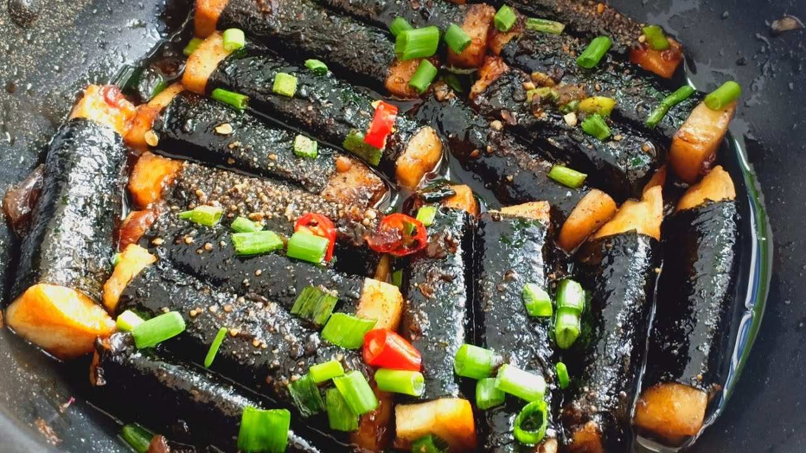
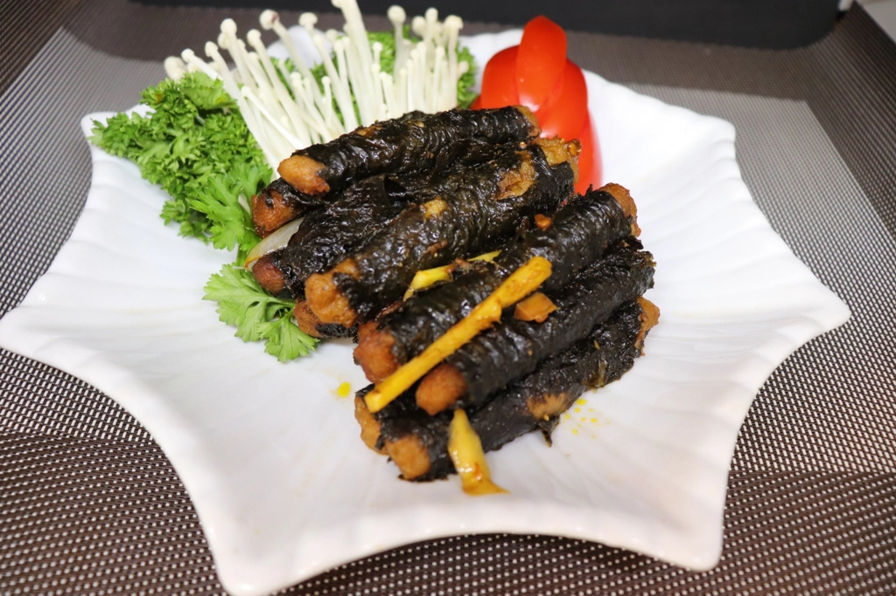

Món chay dân dã, đậm đà hương vị với cà tím kho thơm nồng trong nồi đất
– thích hợp cho những bữa cơm thanh đạm mà vẫn ngon miệng. Cà Kho Tộ là
một lựa chọn tuyệt vời cho những ai yêu thích ẩm thực chay hoặc muốn
thay đổi khẩu vị với một món ăn đơn giản nhưng đầy đủ hương vị.


Nguyên liệu
Cà tím: 2 quả (chọn quả tươi, không bị dập nát)
Nước tương chay: 3-4 muỗng canh (điều chỉnh theo khẩu
vị)
Đường: 2 muỗng canh (để làm nước màu và nêm nếm)
Dầu ăn: 2 muỗng canh
Tiêu xay: 1/2 muỗng cà phê
Tỏi: 2-3 tép, băm nhỏ
Ớt tươi: 1-2 quả (thái lát, tùy chọn, tăng độ cay)
Hành lá: 2-3 nhánh, cắt khúc
Nước lọc: 100ml (để kho cà)
Nước màu (nước hàng): 1 muỗng cà phê (tùy chọn, để
tạo màu đẹp cho món ăn)
Cách làm
Bước 1: Sơ chế cà tím
Cà tím rửa sạch, cắt bỏ cuống. Thái cà tím thành khúc vừa ăn
(khoảng 3-4 cm).
Ngâm cà tím đã thái vào nước muối loãng khoảng 10-15 phút. Việc
này giúp cà tím ra bớt nhựa, không bị thâm đen và giữ được màu sắc
đẹp khi chế biến.
Sau khi ngâm, vớt cà tím ra, rửa sạch lại với nước lạnh và để ráo
hoàn toàn. Dùng khăn giấy thấm khô từng miếng cà tím để khi chiên
không bị bắn dầu.
Bước 2: Chiên sơ cà tím
Đặt chảo lên bếp, cho khoảng 1-2 muỗng canh dầu ăn vào đun nóng.
Cho cà tím đã ráo nước vào chảo, chiên sơ các mặt cho đến khi cà
tím hơi vàng nhẹ và săn lại. Không cần chiên quá chín, chỉ cần tạo
lớp vỏ ngoài để cà không bị nát khi kho.
Gắp cà tím đã chiên sơ ra đĩa có lót giấy thấm dầu để loại bỏ bớt
dầu thừa.
Bước 3: Làm nước màu (nước hàng) và kho cà
Trong một nồi đất (hoặc nồi thông thường), cho 1 muỗng canh đường
và 1 muỗng canh nước lọc vào. Đun trên lửa nhỏ, không khuấy, cho
đến khi đường tan chảy và chuyển sang màu cánh gián đẹp mắt. Đây
là bước làm nước màu.
Khi nước màu đạt màu mong muốn, nhanh tay cho tỏi băm vào phi
thơm.
Đổ 100ml nước lọc vào nồi, khuấy đều để nước màu tan hoàn toàn.
Thêm 3-4 muỗng canh nước tương chay, 1 muỗng canh đường còn lại và
1/2 muỗng cà phê tiêu xay vào nồi. Khuấy đều và đun sôi nhẹ.
Cho cà tím đã chiên sơ vào nồi nước kho. Đảo nhẹ nhàng để cà tím
thấm đều nước sốt.
Hạ lửa xuống mức nhỏ nhất, đậy nắp và kho cà tím khoảng 10-15
phút. Trong quá trình kho, thỉnh thoảng đảo nhẹ để cà tím chín đều
và thấm gia vị. Nước sốt sẽ dần sánh lại.
Bước 4: Hoàn thiện và thưởng thức
Khi cà tím đã mềm, thấm vị và nước sốt sánh lại, nêm nếm lại cho
vừa khẩu vị.
Rắc hành lá cắt khúc và ớt thái lát (nếu dùng) lên trên. Đảo nhẹ
một lần nữa rồi tắt bếp.
Món cà kho tộ chay ngon nhất khi dùng nóng với cơm trắng. Hương vị
đậm đà của cà tím kho sẽ làm bữa cơm thêm phần hấp dẫn.
Mẹo nhỏ để Cà Kho Tộ Chay ngon hơn:
Chọn cà tím: Nên chọn cà tím tươi, vỏ bóng, cầm
chắc tay. Cà tím dài sẽ dễ cắt và đẹp mắt hơn.
Ngâm cà tím: Ngâm cà tím trong nước muối loãng là
bước quan trọng để loại bỏ nhựa, giúp cà không bị thâm và đắng.
Chiên sơ cà tím: Chiên sơ cà tím trước khi kho giúp
cà giữ được hình dạng, không bị nát và thấm gia vị tốt hơn.
Làm nước màu: Khi làm nước màu, nên đun trên lửa
nhỏ và không khuấy để đường không bị lại sạn. Quan sát màu sắc để
tránh bị cháy.
Kho bằng nồi đất: Kho bằng nồi đất sẽ giúp món ăn
giữ nhiệt lâu hơn, hương vị đậm đà và thơm ngon đặc trưng.
Điều chỉnh độ cay: Bạn có thể thêm ớt tươi hoặc ớt
bột tùy theo sở thích ăn cay của mình.
Thêm nấm: Để tăng thêm hương vị và dinh dưỡng cho
món ăn, bạn có thể thêm một ít nấm rơm hoặc nấm đùi gà cắt lát vào
kho cùng cà tím.
Bình luận và Đánh giá
Đánh giá của bạn
Chưa có bình luận nào.